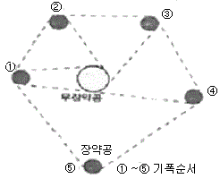
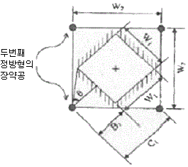
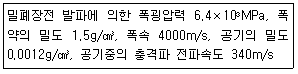
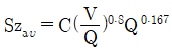
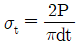
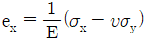
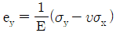
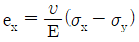
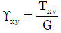

화약류관리기사 (2014-03-02 기출문제)
1과목: 일반화약학
1. 첨장약으로 사용되는 것은?
- 뇌홍
- 테트릴
- 염소산칼륨
- NG
(정답률: 88%)

2. HMX의 결정형의 종류로 모두 옳게 나열한 것은?
- α, β, γ, δ
- α, β, γ
- α, β, δ
- α
(정답률: 83%)
3. 낙추감도가에 임계폭점의 의미를 가장 옳게 설명한 것은?
- 일정한 높이에서 10회 떨어뜨려 한 번도 폭발을 일으키지 않는 높이.
- 화약시료가 폭발을 일으키는 데 필요한 평균 높이
- 일정한 높이에서 10회 떨어뜨려 10회 모두 폭발할 때의 최소높이
- 일정한 높이에서 10회 떨어뜨려 10회 모두 폭발할 때의 최대높이
(정답률: 100%)
4. 트리니트로톨루엔의 산소평형은 얼마인가?
- +1.48
- -1.48
- +0.740
- -0.740
(정답률: 100%)
5. 한국산업표준(KS)에서 정한 도화선 품질 시험 항목이 아닌 것은?
- 점화력
- 내수성
- 연소초시
- 발화점
(정답률: 86%)
6. 화약류 감도시험의 종류와 관계가 먼 것은?
- 낙추시험
- 마찰시험
- 발화점시험
- 가열시험
(정답률: 91%)
7. 일반적으로 C3H5(ONO2)3을 몇 %이상 함유한 것을 다이너마이트하고 할 수 있는가?
- 7
- 16
- 26
- 36
(정답률: 90%)
8. Hg(OCN)2를 저장하는 일반적인 방법으로 옳은 것은?
- 건조분말 속에 저장
- 산성 용액 속에 저장
- 벤졸 속에 저장
- 물 속에 저장
(정답률: 91%)
9. 다음 중 뇌홍의 제조에 사용되는 주성분은?
- 수은
- 목탄
- 암모니아
- 염소산칼륨
(정답률: 90%)
10. 화약류 사용시의 정전기에 의한 위험 방지대책으로 잘못된 것은?
- 비전기식(내정전기) 뇌관을 선정한다.
- 작업자의 피복에 대전방지제를 사용한다.
- 주변 금속물질은 접지하여 방전시킨다.
- 정전기 발생을 막기 위해 장전한다.
(정답률: 92%)
11. 산소 공급제로만 구성된 것이 아닌 것은?
- KNO3, NH4CIO4
- NaNO3, KCIO4
- BaCI2, BaSO4
- NaCIO4, KCIO3
(정답률: 96%)
12. 다음 화약류의 시험에 대한 설명 중 옳은 것은?
- 폭속시험은 폭약의 감도를 측정하는 시험이다.
- 납판시험은 뇌관의 성능을 측정하는 시험이다.
- 탄동구포시험은 폭약의 안정도를 측정하는 시험이다.
- 내열시험은 폭약의 폭발 효과를 측정하는 시험이다.
(정답률: 100%)
13. 다음 화약 중 소량인 경우에도 화염(火焰) 등 열원으로 폭발할 위험성이 가장 높은 것은?
- 흑색화약
- 피크린산
- 초안폭약
- TNT
(정답률: 100%)
14. 다음 중 화합 화약류에 속하는 것은?
- 흑색화약
- 카알릿
- 니트로셀룰로오스
- ANFO
(정답률: 96%)
15. 폭발온도를 높이기 위하여 폭약에 혼합 사용하는 재료는?
- 알루미늄 분말
- 중유
- 과염소산칼륨
- 질산암모늄
(정답률: 100%)
16. 니트로글리세린 100g이 완전폭발 하였을 경우 산소의 과부족량은 얼마인가? (단, 질소의 원자량은 14이다.)
- -3.52g
- -1.76g
- +1.76g
- +3.52g
(정답률: 91%)
17. 어떤 폭약(지름 32mm, 무게 112.5g)의 사상순폭 시험을 한 결과 최대순폭거리가 160mm였다. 이 때의 순폭도는?
- 6
- 5
- 4
- 3
(정답률: 100%)
18. 추진약의 연소효과의 측정 항목으로 가장 거리가 먼 것은?
- 연소압력
- 연소표면적
- 연소온도
- 연소속도
(정답률: 77%)
19. 뇌관(detonator)의 기폭약으로 주로 사용되는 것은?
- 질화납
- 니트로글리세린
- 2.4-디니트로클로로벤젠
- 흑색화약
(정답률: 100%)
20. 니트로화를 통한 니트로글리콜 제조 시 글리세린과 혼합하여 사용하는 가장 큰 이유는?
- 니트로글리콜의 증기압이 낮기 때문이다.
- 재료비를 절감하기 위해서이다.
- 혼산과의 반응시 반응효과를 높이기 위해서이다.
- 독성으로 인한 인체 피해를 방지하기 위해서이다.
(정답률: 74%)
2과목: 발파공학
21. 다음 중 발파작업에 대한 일반적인 설명으로 옳지 않은 것은?
- 천공은 암석의 질, 분포상태 및 굴진방향을 고려하며, 가급적 천공방향은 자유면에 평행하도록 한다.
- 발파작업시 작업장내 물이 고여 있을 경우 누설전류 및 미주전류 측정을 실시하여야 한다.
- 전색은 발파시 발생되는 공발을 방지하고, 발파효과를 높이기 위하여 충분히 한다.
- 장전 후 뇌관 결선을 위하여 공구에 노출된 각선은 가능한 짧게 전달하여 엉킴을 방지하고 결선을 간편하게 한다.
(정답률: 35%)
22. 다음 그림은 터널발파에서 사용되는 심빼기발파 방법 중의 하나이다. 이 그림이 설명하는 심빼기발파 방법은?

- 슬로트 컷(Slot Cut)
- 팬 컷(Fan Cut)
- 코로만트 컷(Coromant Cut)
- 스피랄 컷(Spiral Cut)
(정답률: 40%)
23. 대구경 평행공 심빼기(cyinder cut)에 있어 첫 번째 정방향 심빼기가 완료된 상태는 그림과 같이 나타났다. W1=150mm, B1=W1, C1=225mm, W2=318mm일 때 두 번째 정방형의 장약공에 필요한 주상장약밀도는? (단, 장약공 1개에 대한 장약밀도임)

- 0.18kg/m
- 0.21kg/m
- 0.27kg/m
- 0.33kg/m
(정답률: 37%)
24. 측벽효과(Channel effect)에 대한 설명으로 옳지 않은 것은?
- 천공경을 통해 충격파가 선행되어 공저의 폭약을 강압함으로써 발생한다.
- 공저의 폭약은 고비중이 되고 사압현상이 발생하여 잔류약이 남는 현상이다.
- 고성능(고폭속) 폭약에 특히 현저하게 발생한다.
- 방지대책으로는 공경과 약경의 차이를 줄이고 밀폐장전을 실시한다.
(정답률: 56%)
25. 암석이 균질한 채석장에서 댐 및 항만건설용 대괴 원석을 얻기 위한 발파기술 중 가장 거리가 먼 것은?
- 주상장약을 증대시킨다.
- 재발발파를 실시한다.
- 천공간격(S)과 최소저항선(B)의 비율(S/B)을 1보다 작게 한다.
- 1회 1열씩 발파를 실시한다.
(정답률: 25%)
26. 계단식 발파에 있어 계단높이 7.5m, 저항선 2m, 천공경 65mm로 지발발파를 실시할 경우 공간격은 얼마가 적당한가?
- 1.85m
- 2.69m
- 3.52m
- 4.78m
(정답률: 35%)
27. Decoupling 효과를 이용하여 다음과 같은 조건에서 발파를 실시하는 경우 폭약과 공기와의 경계면에서 발생하는 최고압력은 얼마인가?

- 0.44MPa
- 0.69MPa
- 0.87MPa
- 10.8MPa
(정답률: 24%)
28. 다음 중 구조물 발파해체공법에 대한 설명으로 옳지 않은 것은?
- 전도공법(Felling):기술적으로 가장 간단한 공법이나 전도방향으로 충분한 공간 확보가 필요하다.
- 단축붕괴공법(Telescoping):구조물이 위치한 제자리에 그대로 붕락하도록 하는 공법이며, 주변에 여유 공간이 없을 때 주로 사용된다.
- 내파공법(Implosion):구조물의 내부에만 화약을 장전, 기폭시킴으로서 붕락시 외벽을 중심부로 끌어당길 수 있도록 유도하는 방법이다.
- 상부붕락공법(Toppling):2-3열의 기둥을 가진 건물을 선형적으로 붕괴시키는 공법으로 붕괴 후 전도가 일어난다.
(정답률: 44%)
29. 암석 약 1m3를 발파할 때 필요로 하는 폭약량이하는 뜻을 가진 암석계수(g, kg/m3)의 평균값이 가장 큰 암석은?
- 안산암
- 응회암
- 편마암
- 석회암
(정답률: 32%)
30. Kuznetsov(1973)는 TNT의 양과 지질구조와의 관계에서 파쇄입자의 평균크기에 대해 연구하였다. 그의 평균입자 크기를 예측하는 식

에서 고려되는 요소가 아닌 것은?- 암석계수
- 실제 사용폭약의 강도
- 발파공당 TNT의 양
- 발파공당 파괴암석의 체적
(정답률: 35%)
31. 제발발파와 지발발파에 관한 설명으로 옳지 않은 것은?
- 장약공들을의 폭발력을 서로 중복시켜 전체적인 파괴력을 증대시키는 효과를 얻으려면 제발발파가 유리하다.
- 대발파의 경우 파쇄암석편의 비산에 의한 주변 기옥의 피해 우려가 있을 때는 시차가 짧은 MS발파법이 유리하다.
- 다열 지발발파시 열 사이 파쇄암의 팽창과 이동을 고려한 시차를 스키핑 피리어드(skipping period)라 한다.
- 발파공간거리가 좁을 때 지발발파를 할 경우 컷오프, 사압현상이 발생할 수 있다.
(정답률: 46%)
32. 다음 중 암석의 특성에 따른 폭약 선정방법으로 옳지 않은 것은?
- 강도가 큰 암석에는 에너지가 큰 폭약을 사용한다.
- 장공발파는 비중이 작은 폭약을 사용한다.
- 굳은 암석에는 정적효과가 큰 폭약을 사용한다.
- 심빼기 발파에는 순폭도가 좋은 폭약을 사용한다.
(정답률: 46%)
33. 다음 중 수중발파 설계시 고려해야 할 사항으로 중요성이 가장 낮은 것은?
- 폭약의 선정
- 발파진동
- 수중충격파
- 발파소음
(정답률: 53%)
34. 다음 중 충격하중에 대한 설명으로 옳지 않은 것은?
- 충격하중이란 하중이 순간적으로 극히 높은 유한치로 상승한 후 일정시간동안 지속되는 하중으로 작용시간은 수 초에 이른다.
- 충격하중에 의해 물체 내에 유발된 응력분포는 일반적으로 과도적이며 극히 국한된다.
- 충격하중 하에 있어서는 물체 내에 현저한 응력의 불균일성이 생긴다.
- 충격하중 하에 있어서 물체는 동적양상을 지니며, 이들은 피충격체의 동작을 결정하는데 중요한 요소가 된다.]
(정답률: 46%)
35. 발파에 따른 비석의 발생방지 및 피해감소를 위한 대책으로 옳지 않은 것은?
- 장약공을 청소하고 공발이 되지 않도록 전색물을 충분히 한다.
- 천공오차를 줄이고 공구방향을 보안물건으로 향하게 천공하는 등 천공작업에 유의한다.
- 과장약을 피하고 전폭약의 컷오프가 발생하지 않도록 천공 배치 및 전폭약의위치에 주의한다.
- 발파 매트(blasting mat) 등의 직접방호를 하는 경우에는 제발파를 시행한다.
(정답률: 45%)
36. 다음 중 터널발파시 사용되는 경사공 심빼기와 평행공 심빼기에 대한 설명으로 옳지 않은 것은?
- 경사공 심빼기는 터널 단면이 크지 않고, 장공 천공을 위한 장비 투입이 어려운 경우에 많이 사용된다.
- 경사공 심빼기의 경우 장악량이 많거나 폭약의 위력이 너무 강하면 파쇄된 암석이 막장면으로 밀려나오지 않고 소결현상을 일으켜 발파를 실패할 수 있다.
- 평행공 심빼기는 장공 천공이 가능하여 1회 굴진 거리를 경사공 심빼기보다 크게 할 수 있다.
- 평행공 심빽기의 경우 파석의 비산거리가 비교적 적고 막장 부근에 집중되므로 파석처리가 편하다.
(정답률: 48%)
37. 다음 중 Trim Blasting에 관한 설명으로 옳지 않은 것은?
- 주발파 후 발파가 이루어진다.
- 천공간격은 일반적으로 장약공경의 16배 정도이다.
- 저항선은 천공간격보다 작게 하여 발파시 후방파괴를 방지한다.
- 공저장약은 주상장약밀도의 2~3배 정도로 집중장약한다.
(정답률: 37%)
38. 암반 발파현장에서 지발당 장약량 0.25kg을 사용하여 시험발파를 실시하였다. 폭원으로부터 10m 거리에서 15mm/sec, 50m 거리에서 1mm/sec의 지반진동속도가 계측되었을 때 자승근 환산거리에 의한 발파진동식으로 옳은 것은? (단, 신회도 50% 추정식 도출)
- V=2318.5(D/W1/2)-1.6826
- V=2752.6(D/W1/2)-1.6826
- V=3212.8(D/W1/2)-1.6826
- V=3321.4(D/W1/2)-1.6826
(정답률: 32%)
39. 발파작업표준안전작업지침(고용노동부고시 제2012-99호)에서 제시한 발파구간조물에 대한 피해 및 손상을 예방하기 위한 기준 중 상가(금이 없는 상태)의 허용진동치는 얼마인가? (단, 건물기초에서의 허용 진동치)
- 1.0~4.0cm/sec
- 1.0cm/sec
- 0.5cm/sec
- 0.2cm/sec
(정답률: 58%)
40. 전기발파에서 뇌관을 직렬회로로 연결했을 때 회로전부가 불발할 경우가 있다. 다음 원인 중 가장 적절하지 않은 것은?
- 발파기의 결선부와 모선이 접촉불량할 때
- 발파용량이 작은 발파기를 사용할 때
- 뇌관의 각선이 단락되었을 때
- 손상되고 절연저항이 나쁜 발파모선을 사용할 때
(정답률: 48%)
3과목: 암석역학
41. 다음 중 국제암반역학회(ISRM)에서 제안한 일축압축강도시험을 위한 조건을 만족하지 못한 것은?
- 시험편의 직경:45mm
- 시험편의 종횡비(L/D):3.0
- 시험편 양단면의 편평도:0.01mm
- 시험편에 대한 재하속도:1MPa/s
(정답률: 14%)
42. 암반내 어느 지점에서 남반에 작용하는 초기지압을 측정한 결과 암반의 자중에 의해 발생하는 수직방향의 응력이 최대주응력으로 밝혀졌다. 이 지점에서 지압에 의한 전단파괴로 단층이 형성되었다면 가장 가능성이 큰 단층의 종류는?
- 정단층(normal fault)
- 역단층(reverse fault)
- 변환단층(transform fault)
- 주향이동단층(strike slip fault)
(정답률: 57%)
43. 암서의 일축압축강도보다 작은 응력수준에서 하중을 주기적으로 반복하는 경우 암석의 파괴가 발생하는데 이러한 현상을 무엇이라고 하는가?
- 크리프(Creep)
- 암석돌출(Rock Burst)
- 피로파괴(Fatigue Failure)
- 항복파괴(Yielding Failure)
(정답률: 43%)
44. 다음 중 소성변형률이 증가함에 따라 항복응력이 커지는 현상은 무엇인가?
- 변형률경화(strain-hardening)
- 탄소성거동(elasto-plastic behavior)
- 변형률연화(strain-softening)
- 다이레이턴시(dilatancy)
(정답률: 50%)
45. 절리 경사각 Ψi, 사면 경사각 Ψs, 절리마찰각 ø일 때 전도파괴(Toppling failure)발생하기 위한 조건으로 옳은 것은?(문제 오류로 보기 2, 4번이 같습니다. 정확한 보기 내용을 아시는분 께서는 오류신고를 통하여 내용 작성 부탁 드립니다. 정답은 4번 입니다.)
- Ψs＞Ψi＞ø
- Ψs＞Ψi＞ø+90°
- Ψs＞Ψi＞ø+45°
- Ψs＞Ψi＞ø+90°
(정답률: 39%)
46. 다음 중 압열인장시험(Brizilian test)에 대한 설명으로 옳지 않은 것은?
- 시험장치의 상하 가압면은 접촉면에서의 응력집중을 완화하기 위해 곡선형태를 이룬다.
- 시험편은 원판 형태로 성형을 하여 시험을 실시하며, 가압시 재하축과 직교하는 원판 직경방향으로 파괴가 발생한다.
- 시험편 가압 시 원판의 중앙부에 발생하는 압축응력의 크는 인장응력의 3배이다.
- 파괴하중이 P인 압열인장강도(σt)는

에 의해 게산된다.(d:직경, t:두께)
(정답률: 18%)
47. 암석의 삼축압축시험을 실시한 후 시험결과를 Hoek-Brown 파괴조건식에 적용한 결과 m과 s는 각각 5, 1로 계산되었다. 최소주응력이 15MPa로 주어진 지반에서 파괴시에 최대 주응력은? (단, 신선암의 일축압축강도는 100MPa이다.)
- 123MPa
- 147MPa
- 175MPa
- 200MPa
(정답률: 39%)
48. Mohr의 응력원에서 최대주응력(σ1)이 120MPa, 최소주응력(σ2)이 20MPa이라고 할 때 원의 중심과 반지름은 각각 얼마인가?(오류 신고가 접수된 문제입니다. 반드시 정답과 해설을 확인하시기 바랍니다.)
- 원의 중심=70MPa, 원의 반지름=50MPa
- 원의 중심=50MPa, 원의 반지름=70MPa
- 원의 중심=140MPa, 원의 반지름=100MPa
- 원의 중심=100MPa, 원의 반지름=140MPa
(정답률: 35%)
49. 암석의 표면에 부차된 0-45-90 변형률 roserre를 이용하여 측정된 변형률은 각각 eo=-300×10-6, e45=-150×10-6, e90=-200×10-6이다. 측정 점의 전단변형률 ϒ xy는 얼마인가?
- 4×10-4
- 3×10-4
- 2×10-4
- 1×10-4
(정답률: 32%)
50. 다음 중 완전 탄성체의 성질이 아닌 것은?
- 응력과 변형률이 선형관계를 이룬다.
- 일정한 응력이 가해질 때 발생하는 변형량이 시간에 비례한다.
- 힘을 가하였다가 제거하면 본래의 변위(형태)로 되돌아온다.
- 영률이 측정방향에 상관없이 일정하다.
(정답률: 53%)
51. 경사방향/경사가 300/40인 절리의 방향을 주향/경사로 올바르게 표시한 것은?
- N60W/40SE
- N60W/40NW
- N30W/40SE
- N30E/40NW
(정답률: 30%)
52. 다음 중 측정된 인장강도 값이 가장 크게 나타나는 경향을 보이는 시험법은?
- 직접인장시험
- 압열인장시험
- 굴곡시험
- 현지인장시험
(정답률: 39%)
53. RMR 분류법에 대한 설명으로 옳지 않은 것은?
- 터널의 무지보 구간의 자립시간을 평가할 수 있다.
- 대상 암반이 3개 군의 불연속면을 가지고 있는 것으로 가정하였다.
- 기초 RMR을 평가하기 위한 분류요소에는 불연속면의 방향성은 포함되지 않는다.
- 기초 RMR을 평가하기 위한 분류요소 중 배점이 가장 높은 것은 일축압축강도이다.
(정답률: 37%)
54. Griffith 파괴이론에 의하면 암석의 전단강도는 인장강도의 몇 배인가?
- 2배
- 4배
- 6배
- 8배
(정답률: 28%)
55. 다음 복합체의 역학적 모형 중 대시포트(dashpot)를 포함하지 않는 것은?
- Maxwell 물체
- St. Venant 물체
- Kelvin 물체
- Burhers 물체
(정답률: 52%)
56. 암석의 내부마찰각을 ø, 최소주응력이 작용하는 면과 파괴면이 이루는 각을 α라 할 때, 옳은 관계식은? (단, Mohr-Coulomb 파괴조건식에 의함)
- α=45°-ø/2
- α=45°+ø/2
- α=60°-ø/2
- α=60°+ø/2
(정답률: 12%)
57. z축에 수직한 x-y 평면의 평면응력(plane-stress)상태를 표시하는 식이 아닌 것은?




(정답률: 40%)
58. 직경이 15m, 등가치수(equivalent dimension)가 6m인 터널에서 Q값이 30일 때, 최대무지보 폭은 얼마인가?
- 10.23m
- 12.71m
- 14.63m
- 19.49m
(정답률: 17%)
59. 무한 매질 속에 굴착된 원형 터널의 응력분포해석에서 정수압(-P) 상태일 때 터널 벽면에 집중되는 접선 응력의 크기로 옳은 것은?
- -P
- -2P
- -3P
- -4P
(정답률: 50%)
60. 절리면의 압축강도(JCS)가 100MPam 잔류마찰각이 20°인 절리면에 대해 경사시험(tilt test)을 실시한 결과 40°에서 상부 블록의 미끄러짐이 발생하고 그 순간 상부블록에 의해 절리면에 가해지는 수직응력이 1MPa인 경우 절리면의 거칠기 계수(JRC)는 얼마인가?
- 4
- 6
- 8
- 10
(정답률: 13%)
4과목: 화약류 안전관리 관계 법규
61. 꽃불류 외의 화약류의 사용허가신청의 경우 허가신청서에 첨부하여야 하는 서류에 해당하는 것은?
- 사용장소 및 그 부근약도
- 사용계획서
- 사용순서대장
- 제조소명
(정답률: 45%)
62. 피뢰장치에 사용되는 돌침의 지름으로 옳은 것은?
- 5mm 이상
- 8mm 이상
- 10mm 이상
- 12mm 이상
(정답률: 22%)
63. 화약류 장소장소에서 화약류관리보안책임자의 안전상 지시감독에 따르지 아니한 사람에 대한 벌칙으로 옳은 것은?
- 5년 이하의 징역 또는 1천만원 이하의 벌금
- 3년 이하의 징역 또는 700만원 이하의 벌금
- 2년 이하의 징역 또는 500만원 이하의 벌금
- 300만원 이하의 벌금
(정답률: 37%)
64. 재해의 예방상 필요하다고 인정되는 때에 화약류의 소유자에게 안정도시험을 실시하도록 명할 수 있는 사람은?
- 경찰서장
- 지방경찰청장
- 시ㆍ도지사
- 안전행정부장관
(정답률: 48%)
65. 운반신고를 하지 아니하고 운반할 수 있는 화약류의 종류 및 수량으로 옳은 것은?(관련 규정 개정전 문제로 여기서는 기존 정답인 2번을 누르면 정답 처리됩니다. 자세한 내용은 해설을 참고하세요.)
- 꽃불류(장난감용 꽃불류 제외):500kg
- 공포탄(1개당 장악량 0.5g 이하:5만개
- 도폭선:2000m
- 폭발천공기:1000개
(정답률: 37%)
66. 화약류의 운반방법의 기술상의 기준으로 옳은 것은?
- 화약류의 운반은 자동차에 의하여야 하며 300킬로미터 이상의 거리를 운반하는 때에는 운송인은 도중에 운전자를 교체할 수 있도록 예비운전자 1명 이상을 태울 것
- 야간이나 앞을 분간하기 힘든 경우에 주차하고자 하는 때에는 차량의 전방과 후방 30미터 지점에 적색등불을 달 것
- 화약류를 실은 차량이 서로 진행하는 때(앞지르는 경우를 제외한다)에는 100미터 이상, 주차하는 때에는 50미터 이상 거리를 둘 것
- 뇌홍 및 뇌홈을 주로 하는 기폭약은 수분 또는 알코올분이 20퍼센트 정도를 머금은 상태로 운반할 것
(정답률: 39%)
67. 지하 1급 화약류저장소에 폭약 17톤을 저장할 때 지반의 두께기준은?
- 20m 이상
- 21.5m 이상
- 24m 이상
- 26m 이상
(정답률: 25%)
68. 화약류 제조시설의 깆분 중 불이 날 위험이 있는 일광건조장과 다른 시설간의 거리가 얼마 미만인 때에는 그 시설과의 사이에 간이 흙둑 는 방폭벽을 설치해야 하는가?
- 5m
- 10m
- 20m
- 30m
(정답률: 35%)
69. 화약류제조업자가 화약류 안정도시험을 불이행 하였을 경우 행정처분기준은? (단, 위반 횟수는 2회)
- 15일 효력정지
- 1월 효력정지
- 3월 효력정지
- 6월 효력정지
(정답률: 34%)
70. 꽃불류 사용의 기술상의 기준으로 옳은 것은?
- 풍속이 초당 5m 이상일 때는 꽃불류의 사용을 중지한다.
- 꽃불류를 발사통안에 넣는 때에는 끈 등을 사용하여 서서히 넣는다.
- 꽃불류의 발사용 화약에 점화하여도 그 화약이 폭발 또는 연소되지 아니하는 때에는 그 발사통에 많은 양의 물을 넣고 30분 이상 경과한 후에 회수한다.
- 쏘아 올리는 꽃불류는 10m 이상의 높이에서 퍼지도록 하여야 한다.
(정답률: 35%)
71. 지상에 설치하는 2급 저장소의 위치ㆍ구조 및 설비의 기준으로 옳지 않은 것은?
- 건물은 벽돌조 이상의 견고한 단층건물로 할 것
- 햇빛이 잘 들도록 2개 이상의 창을 설치하되, 저장소의 기초로부터 1.7m 이상의 높이를 둘 것
- 출입문은 2중문으로 하고 덧문에는 2mm 이상의 철판으로 보강하고 2개 이상의 자물쇠를 장치를 할 것
- 저장소에는 난방시설을 설치하지 아니할 것
(정답률: 32%)
72. 간이저장소에 저장할 수 있는 미진동파쇄기의 최대 저장량으로 옳은 것은?
- 300개
- 1000개
- 1만개
- 3만개
(정답률: 45%)
73. 다음 중 화약류 양도ㆍ양수허가와 관련한 설명으로 옳지 않은 것은?
- 사용자가 특정되지 아니한 경우에는 양수하고자 하는 사람의 주소지를 관할하는 지방경찰청장의 허가를 받아야 한다.
- 제조업자가 제조할 목적으로 화약류를 양수하거나 제조한 화약류를 양도하는 경우는 양도ㆍ양수하거나 제조한 화약류를 양도하는 경우는 양도ㆍ양수허가가 필요없다.
- 화약류의 수입허가를 받은 사람이 화약류의 수입과 관련하여 화약류를 양도ㆍ양수하는 경우에는 양도ㆍ양수 허가가 필요 없다.
- 화약류의 제조업ㆍ판매업 또는 화약류장소를 양도ㆍ양수하는 경우에는 양도ㆍ양수허가가 필요 없다.
(정답률: 34%)
74. 영화 또는 연극의 효과를 위하여 1일 동일한 장소에서 사용허가를 받지 아니하고 사용할 수 있는 꽃불류 수량의 기준으로 틀린 것은? (단, 쏘아 올리는 꽃불류는 제외)
- 원료화약 또는 폭약 15g 미만의 꽃불류 50개 이하
- 원료화약 또는 폭약 15g 이상 30g 미만의 꽃불류 20개 이하
- 원료화약 또는 폭약 30g 이상 50g 미만의 꽃불류 5개 이하
- 발연통ㆍ촬영조명통 또는 폭약(폭발음을 내는 것에 한한다.) 0.1g 이하의 꽃불류
(정답률: 48%)
75. 화약류 사용자는 매월의 사용상황을 관할 경찰서장을 거쳐 허가관청에 언제까지 보고하여야 하는가?
- 다음달 30일까지
- 다음달 15일까지
- 다음달 7일까지
- 다음달 1일까지
(정답률: 48%)
76. 다음 중 화약류 제조업의 허가를 받을 수 있는 사람은?
- 금고 이상의 형을 선고를 받고 그 집행이 끝나거나 집행을 받지 아니하기로 확정된 후 3년이 지난 사람
- 금고 이상의 형의 집행유예선고를 받고 그 집행유예의 기간이 끝난 날로부터 6개월이 지난 사람
- 20세 미만인 사람
- 파산선고를 받고 복권되지 아니한 사람
(정답률: 48%)
77. 화약류저장소 주위에 설치하는 간이 흙둑의 기준으로 옳지 않은 것은?
- 간이흙둑의 경사는 75도 이하로 한다.
- 간이흙둑의의 높이는 꽃불류저장소에 있어서는 처마의 높이 이상으로 설치한다.
- 간이흙둑은 저장소의 바깥쪽 벽으로부터 간이흙둑의 안쪽 벽 밑까지 1m 이상 2m 이내의 거리를 두고 쌓아야 한다.
- 정상의 폭은 1m 이상으로 한다.
(정답률: 35%)
78. 총포ㆍ도검ㆍ화약류 등 단속법 시행령에 규정된 보안물건의 구분으로 옳지 않은 것은?
- 제1종 보안물건:경기장
- 제2종 보안물건:촌락의 주택
- 제3종 보안물건:선박의 항로
- 제4종 보안물건:철도
(정답률: 48%)
79. 전기뇌관 400만개를 폭약량으로 환산하면 얼마인가?
- 40톤
- 8톤
- 4톤
- 1톤
(정답률: 53%)
80. 화약류의 취급방법에 대한 설명으로 옳지 않은 것은?
- 얼어서 굳어진 다이나마이트는 50℃ 이하의 온도가 유지되는 실내에서 누그러뜨린다.
- 화약, 폭약과 화공품은 각각 다른 용기에 넣어 취급한다.
- 사용하다가 남은 화약류 또는 사용에 적합하지 아니한 화약류는 화약류 저장소에 반납한다.
- 전기뇌관의 도통시험 또는 저항시험 시 시험전류는 0.01A를 초과해서는 안 된다.
(정답률: 48%)
5과목: 굴착공학
81. 지반조사를 위한 수세식 시추(wash boring)에 관한 설명으로 옳지 않은 것은?
- 수세식 시추는 비트의 상하운동과 비트 내부를 통해 뿜어진 압력수의 작용으로 지반을 굴진하는 방식이다.
- 시추공에는 대게 케이싱이나 진흙물 사용하여 공벽붕괴를 방지한다.
- 수세식 시추는 장치가 간단하고 경제적이며, 매우 연약한 점토 및 세립의 사질토에 적당하다.
- 수세식 시추는 다른 시추방식에 비하여 시추공 바닥면 아래의 지반이 많이 교란되는 단점이 있다.
(정답률: 12%)
82. 완전 탄성체에 원형 갱도를 굴착할 경우, 상하 방향으로 P의 응력을 받는 갱도 측벽에 발생하는 접선방향응력은?
- 3P
- 2P
- P
- -P
(정답률: 12%)
83. 에너지 저장시설을 지하에 설치하는 경우 이용되는 지하특성과 가장 거리가 먼 것은?
- 단열성
- 항습성
- 격리성
- 차광성
(정답률: 37%)
84. 다음 중 암반 터널의 굴착에 영향을 미치는 요소로 가장 거리가 먼 것은?
- 절리의 방향(주향과 경사)
- 연약대 분포 및 크기
- 공동의 발달 위치 및 크기
- 지반고결 여부
(정답률: 29%)
85. 다음 중 옹벽에 작용하는 토압의 크기 순서로 맞는 것은?
- 수동토압＞정지토압＞주동토압
- 정지토압＞수동토압＞주동토압
- 주동토압＞정지토압＞수동토압
- 수동토압＞주동토압＞정지토압
(정답률: 39%)
86. 건조간위중량(ϒd)이 2.1t/m3이고, 함수비(w)가 21%일 때, 습윤단위중량(ϒt)은 얼마인가?
- 2.31t/m3
- 2.42t/m3
- 2.54t/m3
- 2.65t/m3
(정답률: 34%)
87. 두 불연속면의 교선의 방향이 사면의 경사 방향과 거의 일치하고 사면의 경사가 두 불연속면의 경사보다 급할 경우 발생할 수 있는 암반사면의 파괴형태는?
- 평면파괴
- 쐐기파괴
- 원호파괴
- 전도파괴
(정답률: 25%)
88. 다음 중 터널의 안정성을 확보하기 위하여 설치하는 콘크리트 라이닝의 미세 균열의 발생 원인이 아닌 것은?
- 콘크리트 건조에 따른 수축
- 콘크리트 온도 강하에 따른 온도 수축
- 2차 콘크리트 라이닝의 두께를 두껍게 할 때
- 터널 주변 지반의 상황 변화에 따라 하중이 증가할 때
(정답률: 48%)
89. 실드(shield)공법에 의한 굴착에서 실드는 막장과 작업실을 분리하는 격벽 구조에 따라 전면개방형, 부분개방형, 밀폐형의 3종류로 분류된다. 다음 중 부분개방형 실드에 속하는 것은?
- 이수식 실드
- 토압식 실드
- 수굴식 실드
- 블라인드식 실드
(정답률: 36%)
90. 다음 중 숏크리트(Shotcrete)의 뿜어 부치기 방식에 대한 설명으로 옳지 않은 것은?
- 건식공법은 노즐에서 물과 재료를 혼합하디 때문에 작업원의 숙련도와 관계없이 품질관리가 용이하다.
- 건식공법은 비교적 장거리 압송이 가능하다.
- 습식공법은 뿜어 부치는 작업 도중에 중단이 있으면 호스 등이 막히기 쉽고 부착성이 나쁘게 된다.
- 습식공법은 건식공법에 비래 리바운드 및 분진의 발생이 적다.
(정답률: 46%)
91. 사면인정공법 중 안전율 유지를 위한 사면보호공법(억제공법)에 해당되지 않는 것은?
- 압성토 공법
- 배수공법
- 피복 공법
- 표층 안정 공법
(정답률: 17%)
92. 안정계수가 12, 단위중량이 1.8t/m3, 점착력이 1.5t/m2인 흙으로 된 높이 4m의 사면에 있어서 안전율은?
- 2.0
- 2.5
- 2.9
- 3.6
(정답률: 37%)
93. 경사가 40°인 건조 경사면 위에 암반 블록이 놓여있고 블록과 경사면 간의 점착력이 0인 경우 한계평형조건하에서 블록, 바닥면의 마찰각은 얼마인가?
- 0°
- 20°
- 40°
- 60°
(정답률: 39%)
94. 터널 굴착의 각 단계별 조사항복 중 계획단계에 속하지 않는 것은?
- 실시 설계 검토
- 굴착방식, 공법의 검토
- 단면, 제보공의 설계 검토
- 보조공법, 특수공법의 검토
(정답률: 40%)
95. 터널 굴착 시 내공변위 측정에 의한 주요 평가사항이 아닌 것은?
- 주변지반의 안정성
- 지반 재분류 및 재평가
- 주지보재 설계 및 시공의 타당성
- 콘크리트 라이닝 타설시기 판단
(정답률: 12%)
96. 다음 중 SiO2의 함량에 따라 화성암을 분류할 때 중성암에 해당하는 것은?
- 유문암
- 현무암
- 안산암
- 반려암
(정답률: 40%)
97. 개착공법을 분류할 때 전단면 굴착공법에 해당하는 것은?
- 흙막이식 공법
- 분할식 공법
- 트렌치식 공법
- 선진 도갱 공법
(정답률: 32%)
98. 4~40m의 몇 가닥의 강선을 꼬아서 가닥으로 만든 강연선을 시멘트 그라우트된 천공홀속에 삽입한 것으로, 지하 대공간 구조물의 측벽, 천정 등의 보강이나 지지를 위하여 많이 사용되는 터널보강재는?
- 쏘일네일링(Soil nailing)
- 록앵커(Rock anchor)
- 케이블볼트(Cablebolt)
- 록볼트(Rockbolt)
(정답률: 38%)
99. 기계굴착법인 TBM(Tunnel Boring Machine) 공법의 장점으로 옳지 않은 것은?
- 암질이 양호한 경우 발파공법에 비하여 굴진속도가 빠르다.
- 대부분의 굴진 작업이 기계에 의하므로 인건비가 절감된다.
- 라이닝 작업량의 감소로 인해 공사비가 절감된다.
- 암질의 변화에 대한 적응성이 뛰어나다.
(정답률: 48%)
100. 어떤 터널현장에 분포하는 암반에 대해 Q-시스템을 적용한 결과 Q값 4를 구하였다. 절리면의 거칠기를 나타내는 Jr 값은 1.5이었고, 현장에는 3개 절리군(joint set)과 무작위 절리(random joint)가 분포하고 있다. 이 터널천반의 영구지보 압력(permanent support pressure)은?
- 1.33kg/cm2
- 0.84kg/cm2
- 0.67kg/cm2
- 0.48kg/cm2
(정답률: 30%)